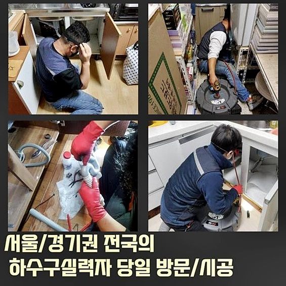
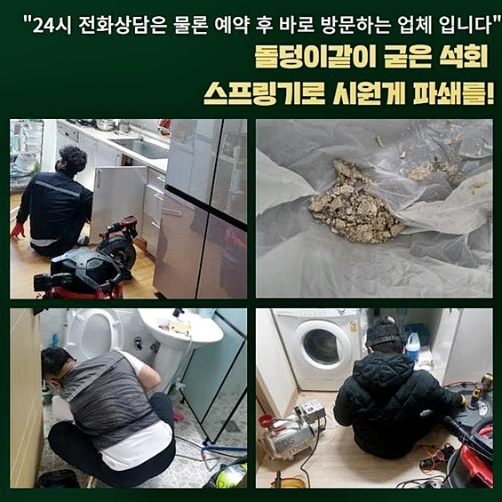
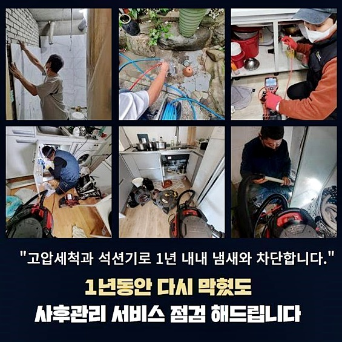
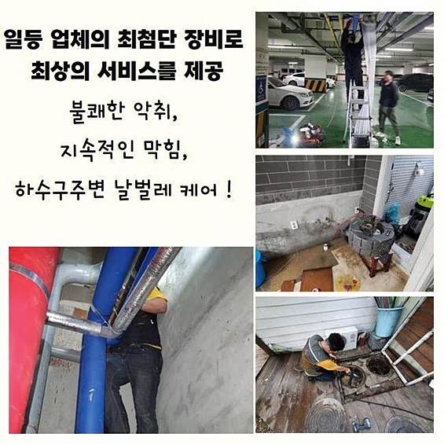
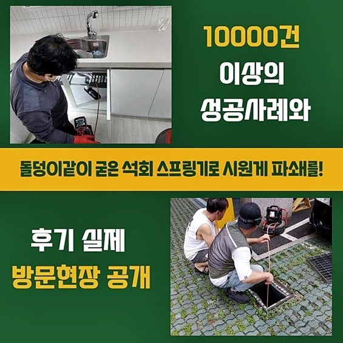
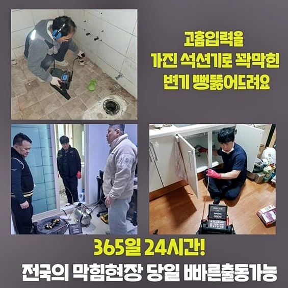

🏠 용인 역북동변기역류 원삼면 배수구뚫기 누수탐지
용인 역북동 변기막힘 전문 시공 후기

📋 작업 개요
- 위치: 용인 역북동, 역북동, 용인
- 서비스 유형: 변기막힘, 하수구막힘, 배관막힘, 누수수리, 역류해결, 뚫는업체, 배관청소, 고압세척
- 작업 일시: 2024. 8. 23. 16:36
- 업체명: 하수구수사대 (010-5615-2118)
🔍 문제 상황
용인 역북동변기역류 원삼면 배수구뚫기 누수탐지
오수를 다수 흐르게하는 식당에서는는 종종 물이 안빠지는 문제들을 경험하십니다
자연스럽게 식자재를 취급하며 음식잔해들이 하수관으로 흐르게되며 그것때문에 배수관이 곤경에 처하고 주위에 있는 도구들을 사용해 뚫리기도하나 얼마못가 문제들이 발발할테죠
큰 맘 먹고 배관 해결사들에게 문의하더라도 영업까지 멈춰야하기에 마냥 쉬울수만은 없는데요
자가조치들을 써서 한시적으로나마 증상이 완화되어도 언제 그랬냐는 듯 또 생길테니 전문가의 입장에선 전문적인 방법으로 조속히 작업하는게 좋은데요
금일엔 조리공간에서는 수도가 안빠져서 주방의 일들을 할 수 있는 상황이 아니라며 다급한 목소리로 의뢰를 하셨는데요
저희도 빠르게 찾아가 배수관을 확인해주었어요
역류증세도 발생되어 통수오류를 막론하고 이물들도 솟구쳤어요
특정 지점에 고착되는 문제가 불거졌다는 의미로 생각해도 되겠습니다 어디쪽에서 문제를 일으키는지 체크를 해보아야 해당 상황에서 벗어날 수 있어요
곧장 내시경을 삽입하여 안쪽상태가 어떠한 체계로 된것인지 어떤 구간에 증상이 심한지 살폈는데요
케이블이 얇은 탓에 벽면에 잔해가 축적된 구경이 넓지않은 라인일지라도 적재적소 이용되요 배수관 내부엔 수직배관도 목격할 수 있었어요
어디든지 유연히 휘기에 갑자기 L자형 배수관도 세심히 관찰할 수 있답니다

🔎 원인 분석
💡 전문가 진단: 정밀 진단 장비를 사용하여 슬러지의 고착 여부를 판명하고 타격/세척 작업을 실시했습니다.
조리시설에서 사용하고 있던 하수구인 탓에 입구부터 기름슬러지와 잔해의 뭉치로 범벅된 상황이였습니다
깊은곳까지 살펴보았더니 고압수청소가 필요했는데요
고객분들이 질문을 해주시는 작업인 고압수청소는 저희업체가 조속히서 방문드려 증상을 관찰해보고 점검하고서 설명하니 무턱대고 고압수청소를 진행시키는 부분들은 없을것이라 말씀드립니다
집수라인도 문제가 심각한것이 파악되어서 관로탐지장치들을 써서 어느 배수설비가 문제가 되는지 살피기로 했죠
하수도로 내시경을 투입시켜 관로탐지장치들을 가용해요
이 기계를 운용하여 문제를 보이는 곳을 인지하게 됩니다
약간의 피치가 있는 경우에도 투입해준 라인으로 거리감을 파악했죠
허나 집수라인도는 안쪽보다는 복잡하게 이뤄져있어서 탐지도구를 써본 후에 문제 위치들을 파악해주는데요
막히게 된 부위를 진단한 결과 바깥부터 심층부까지 막혀버린걸 인지했는데요
지속적으로 하수도가 막히게되며 문제들을 발현시킨 연유는 외부 배수로가 통수되지 못해서였습니다
기름들이 진흙과같이 배출되었습니다
기름자체를 많이 사용하고 있던 조리공간이기때문에 거주지와는 내측 라인의 대량의 기름슬러지의 이물들을 체크했죠
지속적으로 식자재를 취급하고 개수대에서 세척해줄 때라면 하수구로 찌꺼기들이 흐르는 상황은 당연하다고 볼 수 있어요

🔧 작업 과정
증상이 발현되었을 때 예방적 조치들을 세운다면 장기간 문제 없이 쓸 수 있겠습니다
통수가 예사롭지않다면 지속적으로 관리해주셔야해요
마찬가지로 기름자체를 많이 사용하고 있던 곳이라면 가열점의 온수들을 배수구로 흐르게하여 기름들을 없애주어야 되겠으나 권장하는 대응법은 아니죠
바로 배수라인의 기름들을 제거해주고 이물이 심한 부위부터 천천히 세척을 진행시켰어요
이 과정에서는 샤프트장치로 배수구로 선을 삽입해 사슬부가 원운동을 하며 흡착된 오염원들을 조속히 제거시키는데요
벽측에 잔존하는 것들도 사슬부에 뒤엉키게되어 제거까지 이뤄지죠 고압의 청소를 못견딜만큼 노후가 진행되었을땐 샤프트로 이와 비슷한 결과물들을 만들어내는게 가능합니다
내측과 외측에서도 증세가 생겨난 상황으로 전체적인 청소가 이뤄져야했습니다
외부관로부터 내측까지 세척을 진행해준다면 슬러지가 깨끗하게 세척되며 물빠짐이 이뤄지게 됩니다
배수구로 잔해물이 상당하여 중간중간 샤프트도구 사슬로 기름들을 제거했답니다
여지껏 하수도를 이용해주면서 냄새가 심각수준이라고 하셨어요 이물제거가 종료되면 냄새가 생겨나는 불상사는 우려하지 않으셔도 돼요
외부 배수구로는 구경도 넓지만 지속적으로 관리적 측면의 부재로 다양한 이물이 누적된 상황이였어요
배수관으로 뜰채까지 동원해 오수를 걸러내면서 세척을 해주었는데요
슬러지가 사라지며 통수가 빨리 이루어지면서 이후 절차의 청소가 훨씬 어려움없이 이루어졌어요 집수설비의 경우 전형적으로 배수관에서 빠지는 하수들이 해당 부위에 결집되어 빠지게되죠
그리하여 구간 중 하나의 지점이라도 막혀버리면 이곳저곳으로 퍼져 예기치못하게 막혀버리는거에요
지속적으로 샤프트장비기와 내시경을 삽입하여 관찰을 통한 작업합니다
내시경장비를 통해서 내부를 주시하며 또 다른 이상이 있진않은지 인지하기 수월하죠
배수구로부터 외부라인으로 이어져있는 하수도를 뚫기위하여 탐지도구를 통해서 빠트린 라인 없이 조사하여 샤프트도구 운용을 이행했어요
불행 중 다행으로 이물질들을 제거해주어 빠르게 기름슬러지의 이물들을 제거했습니다
배수구로 집수라인도 설치된 형상이 길기때문에 끝에서부터 장비를 이용해 중간까지 작업들을 이어가주었습니다
내부라인에도 슬러지가 존재하진않는지 내시경장비로 검수했죠 내시경장비로 검수를 거치니 언제 그랬냐는 듯 이물하나없는 하수라인을 목격했죠


✅ 작업 완료
이물제거가 끝났으니 배수구로 오수들이 배출되나 확인해주는데요
제대로 빠지는지 확인을 진행시키니 배수구로 빠르게 빠졌습니다 요식업의 경우에는 잔해물이나 식재료때문에 배수구들이 막히게 됩니다
배수관으로 원인을 확실하게 제거하고 필터용품을 잘 놔주시고 일상중에 수도를 배출시키는 시점에도 각별히 유의하시면 좋아요
또한 주기성을 갖추고 관리에 신경써주시면 배수설비가 막혀버리지 않으면서 이용하실 수 있죠
하수관으로 증세가 발발했을 경우 시간에 관계없이 의뢰를 맡겨보세요!



⚠️ 베란다 누수 및 방수 관리 방법
- ✅ 비가 많이 올 때 창틀 주변이나 아래층 천장에 얼룩이 생기는지 정기적으로 확인해 보세요.
- ✅ 우수관 주변 실리콘 마감이 들뜨거나 깨진 틈새가 있는지 손상 여부를 수시로 체크하세요.
- ✅ 베란다 바닥 타일의 줄눈(메지)이 소실되면 그 틈으로 물이 침투하여 누수가 유발됩니다.
- ✅ 누수 의심 증상 발견 시 방치하면 아래층 손실이 커지므로 즉시 전문가의 진단을 받으십시오.
💡 핵심 정리
- 확실한 장비 작업(내시경 점검 및 샤프트 스케일링)으로 원인을 뿌리 뽑습니다.
- 작업 후 1년 이내에 동일한 부위 재발 시 100% 무상 A/S 서비스를 보장합니다.
- 서울 · 경기 · 인천 전 지역에 24시간 언제든 긴급 출동할 수 있도록 항시 대기 중입니다.
❓ 자주 묻는 질문 (FAQ)
🚨 용인 역북동 변기막힘 문제로 고민이신가요?
정확한 원인 진단과 확실한 시공으로 재발 없는 해결을 약속드립니다.
24시간 긴급 출동 | 서울 · 경기 · 인천 전지역 | 1년 내 재발 시 무상 A/S